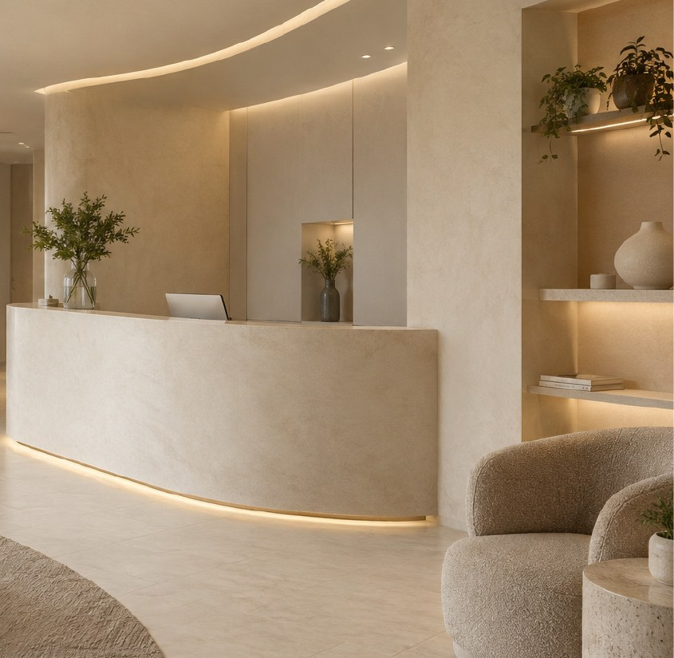
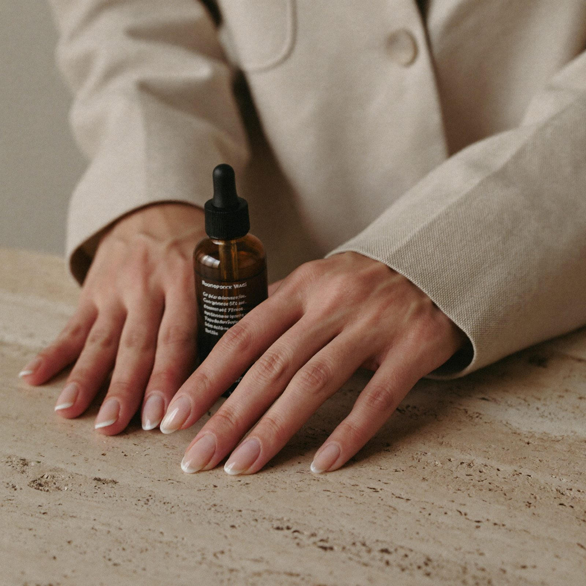
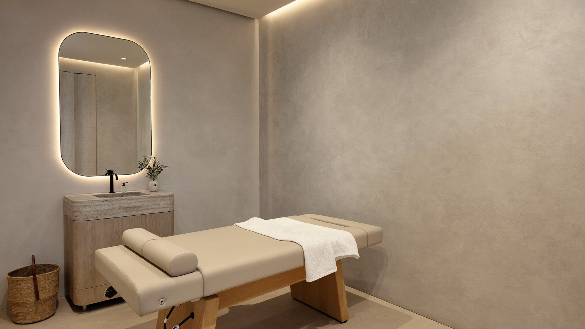
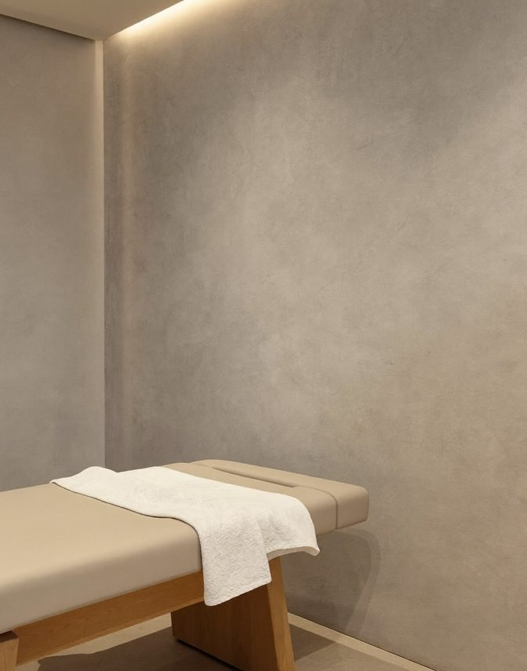

Qué es The Skin Haus
Piel real. Cuidado real.
Una clínica de medicina estética y vascular en Pereira que combina criterio médico, acompañamiento cercano y resultados armónicos.


La marca en cuatro ideas
Lo que nos mueve.
Cuidamos la piel con ciencia, sensibilidad y una mirada profundamente personal.
1
Propósito
Ayudar a cada persona a sentirse bien en su propia piel, con decisiones informadas.
2
Promesa
Acompañamiento médico claro y resultados que respetan la identidad.
3
Diferencial
Sofisticación sin distancia: precisión clínica con una experiencia cálida.
4
Idea rectora
Belleza que se acompaña, no que se impone.
A quién le hablamos
No a una edad: a una actitud.
Hablar con la persona, nunca con su inseguridad.
Lo que evitamos
El espacio
Un lugar para bajar el ritmo.


Valoración médica
Hablemos de tu piel.
Primero te escuchamos. Luego recomendamos.